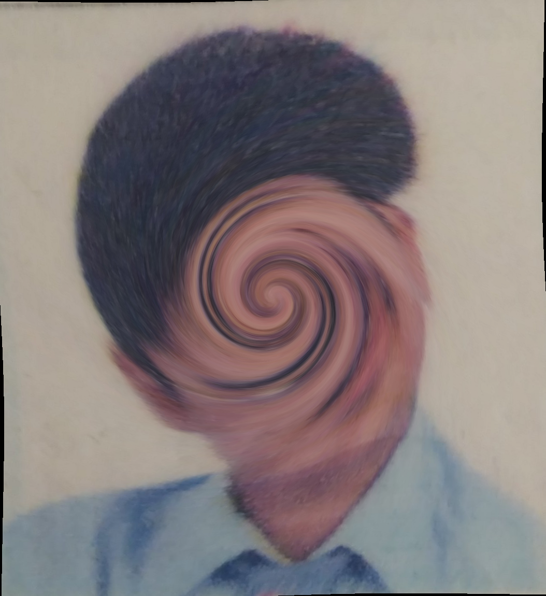

You made it!
Here you go, my embarrassing photo. Admire and cherish it for the rest of your life....

What? Something wrong?... Oh, the swirl? HA!
You need to reverse this transformation. Read this article on how Interpol caught a paedophile this way.
If you manage to get it done, send me the output. I'll send you a bonus picture.